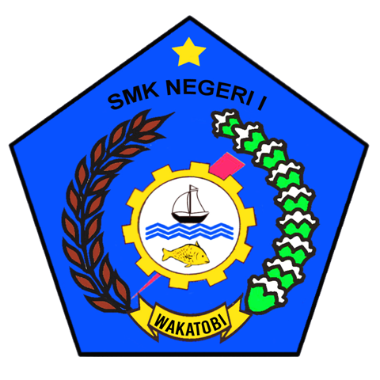

e-Learning XI TKJ SMKN 1 Wakatobi
Teknik Komputer dan Jaringan - Kelas XI
Website ini digunakan untuk mengakses materi pelajaran, tugas, dan pengumuman kelas TKJ.
Topik Pembelajaran
- Topologi dan Arsitektur Jaringan
- Kebutuhan Teknik Pengguna Jaringan
- Data Peralatan Jaringan
- Pengalamatan Jaringan
- Subnetting
- CIDR dan VLSM